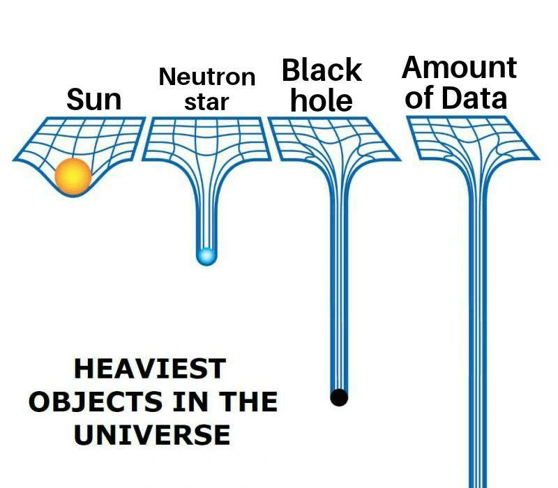

Open Data
An introduction
Presented by FOSSMEC
Data Revolution?
The 21st century renaissance ?
Why Open Data?
You can do whatever you want on Open Data
You can build cool stuffs, gain insights, just don't mess it up

Getting a little serious...
- Helps organisations avoid wastage of resources
- Helps maintain transaparency
- Saves huge amounts of money
Flint Pipes: A Data Lead Story
- University of Michigan led project
- Predicted presence of lead pipes
- Saved around $10 Million
Click here to know More
Tandale Open Data Initative
The story of Map Kibera
- A joint initative by college students and residents at Dar Es Salem
- Upload Infrastructual Data to Open Street Maps
- Tied up with the local Goverment to improve city planning
Click here to know More
More Open Data Success Stories
Challenges to Open Data
- Public Data vs Open Data
- Inconsistent Data
- Inaccurate Data